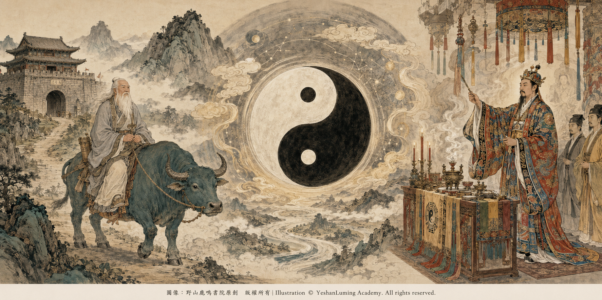

認識華清和·了解道教文化的內涵和美學價值Knowing Hua Qinghe · Understanding the Cultural Meaning and Aesthetic Value of Taoism
China’s Beethoven · Blind Musician AbingKnowing Hua Qinghe · Understanding the Cultural Meaning and Aesthetic Value of Taoism
China’s Beethoven · Blind Musician Abing認識華清和·了解道教文化的內涵和美學價值
中國的貝多芬·瞎子阿炳
中國的貝多芬·瞎子阿炳（102）China’s Beethoven · Blind Musician Abing (102)
瞎子阿炳之所以能夠創作出《二泉映月》這樣一首具有世界級藝術高度的傳世名曲，絕不是憑空而來的。這與他的父親華清和對他嚴格甚至近乎「魔鬼式」的培養與訓練，密不可分。
俗話說：「名師出高徒。」一位音樂家能夠創作出達到世界級藝術高度的作品，那麼，曾經為他打下文化與音樂根基的老師，也一定不是一位普通人。
現在，世人都在熱評、熱捧阿炳，卻很少有人反問一句：沒有接受過現代音樂學院教育的阿炳，憑什麼擁有如此巨大的藝術能量，能夠創作出《二泉映月》這樣的音樂巔峰之作？
要回答這個問題，就不能不談到他的父親華清和。
華清和是當年無錫洞虛宮雷尊殿的當家道士，精通道教音樂，尤擅琵琶，有「鐵手琵琶」之稱。他不僅是一位道士，也是一位具有深厚道教文化修養、精湛音樂技藝和豐富科儀經驗的傳統文化人。
提起華清和，人們往往只記得他與秦家二少奶奶吳阿芬相愛，並生下阿炳的故事，卻忽略了他的另一個重要身分：他是阿炳最早的老師，也是把道教文化、江南音樂和多種樂器演奏技藝傳給阿炳的人。
沒有華清和深厚的道教文化與音樂修養，就不可能有阿炳童年時期那樣嚴格而全面的訓練；沒有這些早年積累，阿炳也很難在後來雙目失明、流落街頭的苦難生活中，創作出具有如此高度和深度的音樂作品。
因此，我們有必要重新認識華清和，也有必要從他的文化背景出發，認識中國道教文化的內涵和美學價值。
瞎子阿炳之所以能夠創作出《二泉映月》這樣一首具有世界級藝術高度的傳世名曲，絕不是憑空而來的。這與他的父親華清和對他嚴格甚至近乎「魔鬼式」的培養與訓練，密不可分。
俗話說：「名師出高徒。」一位音樂家能夠創作出達到世界級藝術高度的作品，那麼，曾經為他打下文化與音樂根基的老師，也一定不是一位普通人。
現在，世人都在熱評、熱捧阿炳，卻很少有人反問一句：沒有接受過現代音樂學院教育的阿炳，憑什麼擁有如此巨大的藝術能量，能夠創作出《二泉映月》這樣的音樂巔峰之作？
要回答這個問題，就不能不談到他的父親華清和。
華清和是當年無錫洞虛宮雷尊殿的當家道士，精通道教音樂，尤擅琵琶，有「鐵手琵琶」之稱。他不僅是一位道士，也是一位具有深厚道教文化修養、精湛音樂技藝和豐富科儀經驗的傳統文化人。
提起華清和，人們往往只記得他與秦家二少奶奶吳阿芬相愛，並生下阿炳的故事，卻忽略了他的另一個重要身分：他是阿炳最早的老師，也是把道教文化、江南音樂和多種樂器演奏技藝傳給阿炳的人。
沒有華清和深厚的道教文化與音樂修養，就不可能有阿炳童年時期那樣嚴格而全面的訓練；沒有這些早年積累，阿炳也很難在後來雙目失明、流落街頭的苦難生活中，創作出具有如此高度和深度的音樂作品。
因此，我們有必要重新認識華清和，也有必要從他的文化背景出發，認識中國道教文化的內涵和美學價值。

Click to enlarge
長期以來，一提到道教，特別是道教中為亡者舉行的薦亡、拔度科儀，一些人便不假思索地將其一概稱為「封建迷信」。這種簡單、片面的否定，往往抹殺了其中流傳千年的文學、音樂、儀式、舞蹈、書法和民間工藝價值。
華清和正是在秦家為二少爺舉行超度法事時，認識了年輕的二少奶奶吳阿芬。這場法事，不僅成為兩個人命運相遇的起點，也讓我們看到了華清和所生活的那個道教文化世界。
從文化學與美學的角度審視，正統的道教科儀並不只是某種神祕信仰活動。它還是一種將經文、音樂、宣白、儀式動作、壇場布置和民間工藝融為一體的綜合性文化形態。
如果暫時放下對其宗教功能的爭論，單從藝術形式來看，它很像一座流動的劇場：有音樂，有吟唱，有宣白，有儀式性的身段，也有由光影、火焰、法器和壇場共同構成的視覺空間。
它以樂演道，以藝寄情；名義上是為亡者舉行儀式，實際上也在安慰仍然活著的人。
在道教科儀中，負責主持儀式、統攝經韻、動作和壇場程序的核心人物，通常稱為「高功法師」。
一位能夠主持重要科儀的高功法師，並非只會念誦經文。他往往需要經過長期學習和訓練，掌握道教經典、科儀程序、道腔音韻、疏文宣讀、步法身段以及多種法器的使用方法。這是一種宗教修養，也是一套複雜而完整的傳統文化訓練。
現有史料並未明確記載華清和是否具有完整的高功傳承，因此，我們不能簡單地斷定他就是一位高功法師。但是，作為雷尊殿的當家道士、重要法事的主持者和以「鐵手琵琶」聞名的道樂高手，他所處的，正是這樣一個經文、音樂、科儀和表演藝術相互融合的文化世界。
只有理解這個世界，我們才能理解，阿炳從父親那裡接受的，絕不只是幾種樂器的演奏技巧。
第一，主持重要科儀，需要具有良好的聲樂天賦，以及吟唱、宣白和統攝全場的能力。
道教科儀中的經文，往往不是像讀書一樣平直地念出來，而是按照特定的道腔和韻律，一字一句地吟唱。
主持者需要具有很好的嗓音和音樂素養。在沒有麥克風的年代，聲音必須洪亮，具有穿透力；音準、節奏和情感也必須準確。他既要能夠領唱經韻，也要能夠宣讀疏文，還要帶領其他道眾，在不同儀式環節中完成速度、節奏和情緒的轉換。
慢板可能低迴悲涼，表達哀悼與召請；快板可能緊張急促，推動儀式進入高潮；宣讀疏文時，則又需要語氣莊重、吐字清晰，具有打動人心的感染力。
這種唱、奏、說相互結合的能力，與現代歌劇和戲劇演員的舞台修養，有許多相通之處。
第二，主持者需要掌握嚴謹的步法、身段和儀式性肢體語言。 在步罡踏斗、淨壇、召神等科儀中，主持者需要按照特定的方位、步法和節奏行進，並配合法劍、令牌等法器完成儀式動作。
不同道派、地域和時代的科儀，具體形式差異很大。有些地方的科儀還吸收了武術、舞蹈和戲曲身段，使整個儀式具有強烈的視覺感染力。
主持者身披繡有雲紋、仙鶴或神靈圖案的法衣，在鑼鼓、鐃鈸和管弦樂器的配合下行進、轉身、踏步、揮劍。每一個方向、每一個動作、每一次停頓，都有相應的儀式含義。
這種表現不是普通的舞蹈，而是一種帶有宗教象徵的身體語言，講究莊重、準確、穩定和節奏感。
第三，主持者需要具有深厚的傳統文化修養。
古代具有較高修養的道士，往往需要學習《道德經》《易經》等傳統典籍，了解陰陽五行、天文曆法、齋醮科儀和音律知識。有些人還具有很高的詩文、書法和駢體文寫作能力。
科儀中使用的青詞和疏文，承擔著祭告、祈請、薦亡等功能，對文字格律、典故運用和書寫形式都有一定要求。歷史上，一些著名文人也曾參與青詞創作。這說明道教科儀的文字傳統，本身就是中國古典文學的一個特殊組成部分。
第四，主持者需要具有高度集中的精神力量。
在外人眼中，主持者是在吟唱、宣白、踏步和使用法器；但是在道教修行中，他的內心還要進行稱為「存思」的精神活動。
所謂存思，就是在高度專注的狀態中，按照道教信仰和儀式要求，在心中觀想神明降臨壇場、真氣運行以及自身與神聖世界相互感應的意象。
這要求主持者同時處理唱腔、節奏、經文、動作、法器、壇場位置和內心觀想。若沒有長期訓練形成的記憶力、控制力和精神專注力，很難完成如此複雜的儀式。
華清和究竟掌握了其中哪些具體科儀，我們今天已經很難逐項考證。但是可以肯定，身為雷尊殿的當家道士和道教音樂高手，他所接受的訓練，必然不只是一般的民間器樂訓練，而是音樂、經文、節奏、儀式和精神修養相互結合的綜合訓練。
這也正是華清和能夠給阿炳打下深厚音樂根基的重要原因。
道教拔度科儀因道派、地域和時代不同，具體程序與表現形式差異很大。下面所列，是對不同地區流傳至今的薦亡、拔度、煉度、施食和破獄等儀式所作的文化性概述，並不等同於清末民初無錫雷尊殿每一場法事的固定程序。
從整體結構看，一場較為完整的薦亡科儀，往往具有「啟壇、召請、薦亡、化解、送別」的時間進程。
【開壇啟聖】：法事拉開序幕。樂師奏響管、笛、鼓、鈸等樂器，主持者以道腔和宣白宣布科儀開始，為壇場奠定莊嚴肅穆的基調。
【招魂沐浴】：主持者以低迴舒緩的經韻，引導亡魂來到靈前，並以象徵性的方式為其沐浴、更衣。這個環節雖然具有宗教色彩，卻也包含著生者對逝者最後的照顧與牽掛。
【誦經拜懺】：主持者領唱，道眾應和，在經文與樂聲的交替中，表達懺悔、祈願和薦亡之意。領唱與合唱彼此呼應，形成具有層次感的聲音空間。
【破獄度亡】：在部分地區的科儀傳統中，儀式會進入節奏強烈的高潮。主持者配合法器和步法，象徵性地破除阻隔、救拔亡魂。鑼鼓和鐃鈸的密集節奏，使整個壇場產生強烈的戲劇張力。
【施食濟幽】：以水、米、香、燈等供物，象徵向孤魂施予飲食和慈悲。這一環節表現出道教文化中悲憫生命、救濟幽魂的觀念。
【謝壇送聖】：科儀接近尾聲，主持者謝壇、送聖，焚化文疏和部分紙紮供物。在火光和樂聲中，整場儀式完成由悲傷、祈願到告別的情感轉化，宣告功德圓滿。
從藝術角度看，這是一場時空交融的立體表演。音樂控制情緒，經文構成敘事，動作建立秩序，壇場和火光營造空間，而家屬與觀禮者則共同參與其中。
阿炳從小耳濡目染的，正是這種由音樂、經韻、節奏、情感和儀式共同構成的藝術環境。
他後來能夠以一把二胡營造出如此深沉、完整而富有戲劇張力的音樂世界，顯然與早年的道教音樂訓練和生活經驗密不可分。
道教薦亡科儀之所以能夠流傳千年，不只是因為人們對亡靈世界的想象，也因為它在宗教和藝術的共同作用下，具有安慰生者、凝聚家庭和幫助人們面對死亡的功能。
這場法事名義上是為了亡者，實際上也在撫慰活著的人。
親人猝然離世，家屬往往會陷入巨大的心理創傷。法事前半段悲涼低迴的經韻和器樂，為人們提供了一個被社會和家族共同承認的情感空間，讓他們可以哭泣，可以追憶，也可以把長久壓抑在心中的悲傷釋放出來。
後半段的救拔、施食和送別，則通過一系列象徵性的儀式，為家屬建立一個溫暖的意象：親人已經離開苦難，得到安頓，前往另一個世界。
從現代心理學的角度看，這種象徵性的告別與情感宣洩，與哀傷輔導中幫助生者完成告別、重新建立生活秩序的某些理念，有相通之處。
它不是現代臨床心理治療，卻在漫長的傳統社會中，承擔了安慰心靈、疏導悲傷和重建生活勇氣的文化功能。
道教音樂與科儀，具有器樂、聲樂、宣白、動作和儀式空間相互配合的綜合藝術特徵，宛如一部中國傳統文化中的宗教交響樂。
其中，無錫道教音樂歷史悠久。它承襲中國古代道教音樂傳統，又吸收江南民間器樂、戲曲和地方音樂的精華，保存了豐富的古代音樂文化成分。如今，無錫道教音樂已被列入國家級非物質文化遺產代表性項目名錄。
在傳統科儀中，後場樂師與主持者之間往往具有長期合作形成的默契。他們根據儀式進程、唱腔、手勢和法器節奏相互配合，在既定程式中又保留一定的即興空間。
阿炳從小接受的，正是這樣一種活態的音樂教育。
他學到的不只是如何把樂譜上的音符演奏出來，而是如何觀察全場，如何感受人的情緒，如何讓音樂隨著儀式和人心的變化而流動。
中國傳統文化講究「慎終追遠」。
道教薦亡科儀將儒家重視的孝道、家族和追思，與道教對生死、神靈和超越的想象結合起來。在莊重的祭典中，一個家庭共同悼念逝者，重新確認彼此的情感聯繫，也把感恩、敬畏和慎重對待生命的價值觀傳給下一代。
這是儒道互補的一種文化表現，也是傳統社會維繫家族情感和倫理秩序的一種方式。
迷信，是盲目的恐懼與盲從；而文化，則是人類在面對死亡的未知與痛苦時，用優美的文學、動聽的音樂、莊重的儀式和精湛的工藝，為冰冷的死亡披上一件溫暖、神聖而充滿尊嚴的外衣。
當我們去除歷史偏見，以客觀、審美的眼光重新看待中國道教科儀，就會發現：那翻飛的法衣、低迴的道腔、激越的鑼鼓、悲涼的管弦，以及夜色中升起的火焰餘燼，都是中華民族在漫長歲月中，對生命、死亡、時間、孝道和美學的深沉演繹。
我們當然不必接受其中所有的宗教解釋，也不必把所有傳統儀式都說成科學；但是，我們不能因為其中含有信仰和神話，就否定它所承載的文學、音樂、倫理、民俗和審美價值。
簡單地將這一切全部稱為「封建迷信」，不是科學，而是另一種無知。
華彥鈞的父親華清和，就是生活在這樣一個文化世界中的雷尊殿當家道士。
他能夠主持法事，精通道教音樂，以琵琶技藝聞名，也具有良好的嗓音和深厚的傳統文化修養。這就從一個重要方面解釋了：為什麼華彥鈞後來雖然離開道觀，經歷雙目失明和流浪賣藝的苦難，卻依然能夠成為一位不朽的中國民間音樂大師。
華清和傳給阿炳的，不只是一把二胡、一面鼓、一支笛子或一套琵琶指法，而是一整個由音樂、經文、生死觀念、儀式節奏和江南民間情感共同構成的精神世界。
他在盡力彌補父愛的同時，也把自己多年積累的本領，幾乎毫無保留地傳給了這個不能公開稱他為父親的孩子。
後來，阿炳離開了道觀，雙目失明，流落街頭，甚至一度沉淪。但是，父親早年播下的文化和音樂種子並沒有消失。那個世界一直深藏在他的血液、肌肉和記憶中。
法事中悲涼的道腔，江南絲竹的婉轉，鼓點的起伏，琵琶的鏗鏘，對亡者的悲憫，對苦難的忍受，以及道教文化對生命、自然和超越的理解，都在他的心中留下了不可磨滅的痕跡。
當人生的苦難終於找到了音樂的出口，《二泉映月》才從他的琴弦上流淌出來。
所以，要真正理解阿炳，首先必須認識華清和；要真正理解《二泉映月》，也不能不了解阿炳早年生活其中的道教文化與無錫道教音樂傳統。
那麼，這位道教音樂高手、華彥鈞的父親，究竟是如何培養和教育華彥鈞的？他又為兒子打下了哪些文化與音樂根基？
這就是我們下一篇要討論的主題。
（未完待續）
Blind Abing’s creation of The Moon Reflected on the Second Spring, an immortal masterpiece of world-class artistic stature, did not arise out of nowhere. It was inseparable from the rigorous—at times almost brutally demanding—education and training he received from his father, Hua Qinghe.
As the old saying goes, “A great teacher produces an outstanding student.” If a musician is capable of creating a work that reaches the heights of world art, then the teacher who laid the foundations of his culture and musicianship could not have been an ordinary man.
Today, people everywhere praise and celebrate Abing. Yet few pause to ask a fundamental question: without ever receiving an education at a modern conservatory, how did Abing acquire such immense artistic power? What enabled him to create a musical summit like The Moon Reflected on the Second Spring?
To answer that question, we must speak of his father, Hua Qinghe.
Hua Qinghe was the presiding Taoist priest of the Leizun Hall at Dongxu Temple in Wuxi. He was deeply versed in Taoist music and especially accomplished on the pipa, earning the sobriquet “Iron-Hand Pipa.” He was not merely a Taoist priest, but also a man of traditional culture endowed with profound knowledge of Taoism, superb musical technique, and extensive experience in ritual practice.
When Hua Qinghe is mentioned, people often remember only the story of his love for Wu Afen, the young second daughter-in-law of the Qin family, and the birth of their son, Abing. They overlook another essential part of his identity: he was Abing’s first teacher—the man who transmitted to him Taoist culture, the music of Jiangnan, and the performance techniques of several musical instruments.
Without Hua Qinghe’s profound cultivation in Taoist culture and music, Abing could never have received such rigorous and comprehensive training during his childhood. Without that early accumulation, it would have been exceedingly difficult for him, after losing his sight and being cast into a life of hardship on the streets, to create music of such extraordinary height and depth.
It is therefore necessary for us to rediscover Hua Qinghe. It is equally necessary to approach the meaning and aesthetic value of Chinese Taoist culture through the cultural world in which he lived.
Blind Abing’s creation of The Moon Reflected on the Second Spring, an immortal masterpiece of world-class artistic stature, did not arise out of nowhere. It was inseparable from the rigorous—at times almost brutally demanding—education and training he received from his father, Hua Qinghe.
As the old saying goes, “A great teacher produces an outstanding student.” If a musician is capable of creating a work that reaches the heights of world art, then the teacher who laid the foundations of his culture and musicianship could not have been an ordinary man.
Today, people everywhere praise and celebrate Abing. Yet few pause to ask a fundamental question: without ever receiving an education at a modern conservatory, how did Abing acquire such immense artistic power? What enabled him to create a musical summit like The Moon Reflected on the Second Spring?
To answer that question, we must speak of his father, Hua Qinghe.
Hua Qinghe was the presiding Taoist priest of the Leizun Hall at Dongxu Temple in Wuxi. He was deeply versed in Taoist music and especially accomplished on the pipa, earning the sobriquet “Iron-Hand Pipa.” He was not merely a Taoist priest, but also a man of traditional culture endowed with profound knowledge of Taoism, superb musical technique, and extensive experience in ritual practice.
When Hua Qinghe is mentioned, people often remember only the story of his love for Wu Afen, the young second daughter-in-law of the Qin family, and the birth of their son, Abing. They overlook another essential part of his identity: he was Abing’s first teacher—the man who transmitted to him Taoist culture, the music of Jiangnan, and the performance techniques of several musical instruments.
Without Hua Qinghe’s profound cultivation in Taoist culture and music, Abing could never have received such rigorous and comprehensive training during his childhood. Without that early accumulation, it would have been exceedingly difficult for him, after losing his sight and being cast into a life of hardship on the streets, to create music of such extraordinary height and depth.
It is therefore necessary for us to rediscover Hua Qinghe. It is equally necessary to approach the meaning and aesthetic value of Chinese Taoist culture through the cultural world in which he lived.
Click to enlarge
For a long time, whenever Taoism has been mentioned—particularly its rituals of commending, delivering, and guiding the souls of the deceased—some people have reflexively dismissed everything under the label of “feudal superstition.” Such simplistic and one-sided rejection often erases the literary, musical, ceremonial, choreographic, calligraphic, and folk-art traditions that have been handed down for thousands of years.
It was while conducting a rite of deliverance for the Qin family’s deceased second son that Hua Qinghe met his young widow, Wu Afen. That ceremony not only became the point at which their destinies first converged; it also offers us a glimpse into the Taoist cultural world in which Hua Qinghe lived.
Viewed from the perspectives of cultural studies and aesthetics, an orthodox Taoist ritual is not merely an activity rooted in mystical belief. It is also an integrated cultural form that brings together sacred texts, music, ritual proclamation, ceremonial movement, altar design, and folk craftsmanship.
If we temporarily set aside disputes over its religious function and consider only its artistic form, it resembles a theater in motion. It contains instrumental music, chanting, spoken proclamation, ritualized bodily movement, and a visual space created jointly by light, fire, sacred implements, and the altar itself.
Through music, it gives expression to the Way; through art, it gives refuge to human feeling. In name, the ceremony is conducted for the dead. In reality, it also consoles those who remain alive.
In Taoist ritual, the central figure who presides over the ceremony and coordinates its chants, movements, and altar procedures is commonly known as the gaogong fashi, or High Ritual Master.
A High Ritual Master capable of presiding over an important ceremony does far more than recite scriptures. He ordinarily undergoes years of study and training, mastering Taoist classics, ritual procedures, the melodies and prosody of Taoist chant, the proclamation of petitions, ceremonial footwork and bodily forms, and the use of numerous sacred implements. This constitutes a form of religious cultivation, but it is also a complex and complete system of traditional cultural education.
Existing historical records do not state clearly whether Hua Qinghe received the complete lineage training of a High Ritual Master. We therefore cannot simply declare that he was one. Yet as the presiding Taoist priest of Leizun Hall, a leader of important ceremonies, and a master of Taoist music renowned as the “Iron-Hand Pipa,” he inhabited precisely such a cultural world—a world in which scripture, music, ritual, and performing art were interwoven.
Only by understanding that world can we understand that what Abing received from his father was far more than instruction in the techniques of several musical instruments.
First, presiding over an important ritual requires strong vocal gifts, as well as the ability to chant, proclaim sacred texts, and command the entire ceremonial space.
The scriptures used in Taoist ritual are not ordinarily read aloud in the flat manner of an everyday text. They are chanted, word by word and line by line, according to distinctive Taoist melodies and rhythmic patterns.
The presiding ritualist must possess an excellent voice and refined musicianship. In an age without microphones, his voice had to be powerful and penetrating. His pitch, rhythm, and emotional expression also had to be precise. He needed to lead the chanting of scripture, proclaim written petitions, and guide the other Taoist participants through changes of pace, rhythm, and emotional tone as the ceremony moved from one stage to another.
A slow passage might be mournful and lingering, expressing grief and invocation. A rapid passage might become tense and urgent, propelling the ritual toward its climax. When a petition was proclaimed, the voice had to become solemn, the diction lucid, and the delivery sufficiently compelling to move the hearts of those present.
This integration of singing, instrumental performance, and spoken proclamation has much in common with the stagecraft required of modern opera singers and dramatic actors.
Second, the presiding ritualist must master disciplined footwork, bodily forms, and a ritual language of physical movement.
In ceremonies such as pacing the celestial pattern, purifying the altar, and invoking the deities, the presiding ritualist must move according to prescribed directions, steps, and rhythms, coordinating his actions with ritual implements such as a ceremonial sword or command tablet.
The precise forms of these ceremonies vary greatly among Taoist schools, regions, and historical periods. In some areas, ritual practice has also absorbed elements of martial arts, dance, and traditional theater, giving the ceremony a powerful visual presence.
Wearing ceremonial robes embroidered with cloud patterns, cranes, or images of divine beings, the ritualist advances, turns, steps, and brandishes his sword to the accompaniment of gongs, drums, cymbals, wind instruments, and strings. Every direction, every movement, and every pause carries a corresponding ritual meaning.
This is not ordinary dance. It is a bodily language endowed with religious symbolism, one that demands solemnity, precision, stability, and rhythmic discipline.
Third, the presiding ritualist must possess a profound cultivation in traditional Chinese culture.
In ancient times, Taoist priests of high attainment often studied traditional classics such as the Tao Te Ching and the Book of Changes. They were expected to understand yin and yang, the Five Phases, astronomy and the calendar, Taoist rites of offering and purification, and the principles of music. Some were also highly accomplished in poetry, prose, calligraphy, and the composition of parallel prose.
The green petitions and memorials used in Taoist ceremonies served such purposes as making ritual announcements, presenting supplications, and commending the souls of the deceased. Their composition required a certain command of literary form, classical allusion, prosody, and calligraphic presentation. Throughout history, some celebrated men of letters also participated in composing these ceremonial texts. This demonstrates that the literary tradition of Taoist ritual is itself a distinctive part of Chinese classical literature.
Fourth, the presiding ritualist must possess extraordinary powers of mental concentration.
To an outside observer, the ritualist is chanting, proclaiming texts, performing ceremonial steps, and manipulating sacred implements. Within Taoist practice, however, he must simultaneously undertake an inner spiritual activity known as cunxiang—focused visualization.
In a state of intense concentration, the ritualist follows the requirements of Taoist belief and ceremonial practice, inwardly envisioning the descent of divine beings into the ritual space, the circulation of vital energy, and the communion between himself and the sacred world.
He must therefore attend at once to melody, rhythm, scripture, bodily movement, sacred implements, his position within the altar space, and the images unfolding within his mind. Without the memory, self-command, and spiritual concentration developed through years of training, it would be exceedingly difficult to complete a ceremony of such complexity.
It is now difficult to establish, one by one, precisely which of these rituals Hua Qinghe mastered. What can be said with confidence is that, as the presiding Taoist priest of Leizun Hall and a master of Taoist music, the training he received could not have been limited to ordinary folk instrumental performance. It must have been a comprehensive education in which music, scripture, rhythm, ritual, and spiritual cultivation were closely joined.
This was also one of the principal reasons Hua Qinghe was able to give Abing such a profound musical foundation.
The specific procedures and forms of Taoist deliverance rituals vary greatly among different schools, regions, and historical periods. What follows is a cultural overview drawn from rites of commending the dead, deliverance, ritual transformation, food offering, and the symbolic breaking of the prisons of the underworld as they have survived in different regions. It should not be understood as the fixed program of every ceremony conducted at Leizun Hall in Wuxi during the late Qing dynasty and early Republican era.
In its broad structure, a relatively complete ritual for the deceased often follows a progression through the opening of the altar, invocation, commendation of the departed, release from suffering, and final farewell.
【Opening the Altar and Invoking the Sages】: The ceremony begins. Musicians sound the pipes, flutes, drums, and cymbals. Through Taoist chant and solemn proclamation, the presiding ritualist announces the opening of the rite and establishes an atmosphere of gravity and reverence throughout the altar space.
【Summoning and Bathing the Soul】: In chants that are gentle, unhurried, and mournful, the ritualist guides the soul of the deceased to the place of mourning and symbolically bathes and clothes it. Although this stage is religious in character, it also embodies the final care and enduring attachment of the living toward the departed.
【Reciting Scripture and Performing Repentance】: The presiding ritualist leads the chant, and the other Taoists respond. Through the alternating currents of scripture and music, they express repentance, prayer, and the wish to commend the deceased. The call of the leader and the answering chorus create a layered space of sound.
【Breaking the Prisons and Delivering the Dead】: In the ritual traditions of certain regions, the ceremony now enters a strongly rhythmic climax. With sacred implements and ceremonial footwork, the ritualist symbolically breaks through the barriers that confine the departed soul and delivers it from suffering. The dense rhythms of gongs, drums, and cymbals fill the entire altar space with intense dramatic force.
【Offering Food to the Wandering Spirits】: Water, rice, incense, lamps, and other offerings symbolically convey nourishment and compassion to wandering and forsaken souls. This stage expresses the Taoist ideal of showing mercy toward all forms of life and bringing relief to spirits in darkness.
【Thanking the Altar and Bidding Farewell to the Deities】: As the ceremony draws to its close, the ritualist gives thanks at the altar, bids farewell to the divine beings, and burns written petitions and certain paper offerings. Amid firelight and music, the emotional movement of the ceremony passes from sorrow and supplication to farewell, and the rite is declared complete.
From an artistic perspective, this is a multidimensional performance in which time and space converge. Music governs emotion; scripture forms the narrative; movement establishes order; the altar and firelight create the surrounding space; and the bereaved family and assembled witnesses participate in the experience together.
This was the artistic environment that surrounded Abing from childhood—an environment formed jointly by music, scriptural chant, rhythm, emotion, and ritual.
That he later became capable of creating, with a single erhu, a musical world so profound, complete, and charged with dramatic force was clearly inseparable from his early training in Taoist music and the experiences of his childhood.
Taoist rituals for the dead have endured for a thousand years not only because of human imaginings about the world of spirits, but also because, through the combined power of religion and art, they console the living, draw families together, and help people confront death.
In name, the ceremony is performed for the dead. In reality, it also brings comfort to the living.
When a loved one dies suddenly, the family is often plunged into profound psychological trauma. The mournful, lingering chants and instrumental music of the ceremony’s first half provide an emotional space recognized and shared by both family and community. Within that space, people are permitted to weep, to remember, and to release the grief long suppressed within their hearts.
Through a sequence of symbolic acts, the deliverance, offerings, and farewell of the latter half create a consoling image for the bereaved: their loved one has left suffering behind, has found peace, and is journeying toward another world.
From the perspective of modern psychology, this symbolic farewell and emotional release share certain principles with grief counseling, particularly its efforts to help the living complete the act of saying goodbye and restore order to their lives.
Such ritual is not modern clinical psychotherapy. Yet throughout the long centuries of traditional society, it performed a cultural function: consoling wounded hearts, guiding sorrow toward release, and helping people recover the courage to live.
Taoist music and ritual combine instrumental music, vocal performance, spoken proclamation, ceremonial movement, and sacred space into an integrated art form. Together, they resemble a religious symphony within the traditions of Chinese culture.
The Taoist music of Wuxi, in particular, has a long history. It inherits the musical traditions of ancient Chinese Taoism while also absorbing the finest elements of Jiangnan folk instrumental music, regional opera, and local musical culture. In doing so, it has preserved a rich inheritance from the musical life of ancient China. Today, Wuxi Taoist music has been inscribed on China’s national list of representative intangible cultural heritage.
In traditional ceremonies, the musicians positioned behind the ritual space and the presiding ritualist often share an intuitive understanding developed through years of collaboration. They coordinate their playing according to the progress of the ceremony, the vocal melody, the ritualist’s gestures, and the rhythms of the sacred implements. Within the established forms, they also preserve a certain freedom for improvisation.
This was the kind of living musical education Abing received from childhood.
What he learned was not merely how to perform the notes written on a page. He learned how to observe the entire gathering, how to sense the emotions of those present, and how to make music flow in response to the changing movement of the ritual and the human heart.
Chinese traditional culture teaches people to “attend carefully to the final rites and remember those who came before.”
Taoist rituals for the dead bring together the Confucian emphasis on filial devotion, family, and remembrance with Taoist visions of life and death, divine beings, and transcendence. In the solemnity of the ceremony, a family mourns the departed together, reaffirms the emotional bonds among its members, and passes to the next generation the values of gratitude, reverence, and a responsible regard for life.
This is one cultural expression of the complementary relationship between Confucianism and Taoism. It was also one of the ways in which traditional society sustained the emotional bonds of the family and its ethical order.
Superstition is blind fear and blind obedience. Culture, by contrast, is humanity’s endeavor, when confronted by the mystery and pain of death, to draw upon beautiful literature, moving music, solemn ceremony, and exquisite craftsmanship—and with them to place around the coldness of death a garment of warmth, sanctity, and dignity.
When we cast aside historical prejudice and reconsider Chinese Taoist ritual with an objective and aesthetic eye, we begin to see that the swirling ceremonial robes, the mournful Taoist chants, the impassioned gongs and drums, the sorrowful winds and strings, and the embers rising into the darkness of night are all profound enactments of the Chinese people’s understanding of life, death, time, filial devotion, and beauty through the long passage of history.
We need not accept every religious explanation contained within these traditions, nor must we claim that every traditional ritual is scientific. But we cannot deny the literary, musical, ethical, folkloric, and aesthetic values they embody merely because they also contain faith and myth.
To dismiss all of this with the simple label “feudal superstition” is not science. It is another form of ignorance.
Hua Qinghe, the father of Hua Yanjun, was the presiding Taoist priest of Leizun Hall who lived and worked within this cultural world.
He was capable of leading religious ceremonies, was deeply versed in Taoist music, was renowned for his mastery of the pipa, and possessed a fine voice and profound cultivation in traditional Chinese culture. This helps explain, from one essential perspective, why Hua Yanjun could leave the Taoist temple, endure blindness and the hardship of performing on the streets, and still become an immortal master of Chinese folk music.
What Hua Qinghe transmitted to Abing was not merely an erhu, a drum, a flute, or a collection of pipa fingering techniques. It was an entire spiritual world composed of music, scripture, ideas about life and death, the rhythms of ritual, and the emotions of Jiangnan folk culture.
While doing all he could to compensate for the fatherly love he was unable to give openly, Hua Qinghe also passed on, almost without reservation, the abilities he had spent so many years acquiring—to a child who could not publicly call him Father.
Later, Abing left the Taoist temple. He lost his sight, drifted onto the streets, and for a time even descended into dissipation. Yet the cultural and musical seeds planted by his father during those early years did not disappear. That world remained hidden deep within his blood, his muscles, and his memory.
The mournful Taoist chants of the ceremonies, the graceful turns of Jiangnan silk-and-bamboo music, the rise and fall of the drumbeats, the ringing power of the pipa, compassion for the dead, endurance in the face of suffering, and the Taoist understanding of life, nature, and transcendence—all left indelible traces within him.
When the suffering of his life finally found an outlet in music, The Moon Reflected on the Second Spring flowed from his strings.
Therefore, to understand Abing truly, we must first come to know Hua Qinghe. And to understand The Moon Reflected on the Second Spring truly, we must also understand the Taoist culture and musical traditions of Wuxi in which Abing spent his early life.
How, then, did this master of Taoist music and father of Hua Yanjun train and educate his son? What cultural and musical foundations did he lay for him?
That will be the subject of our next essay.
(To be continued)